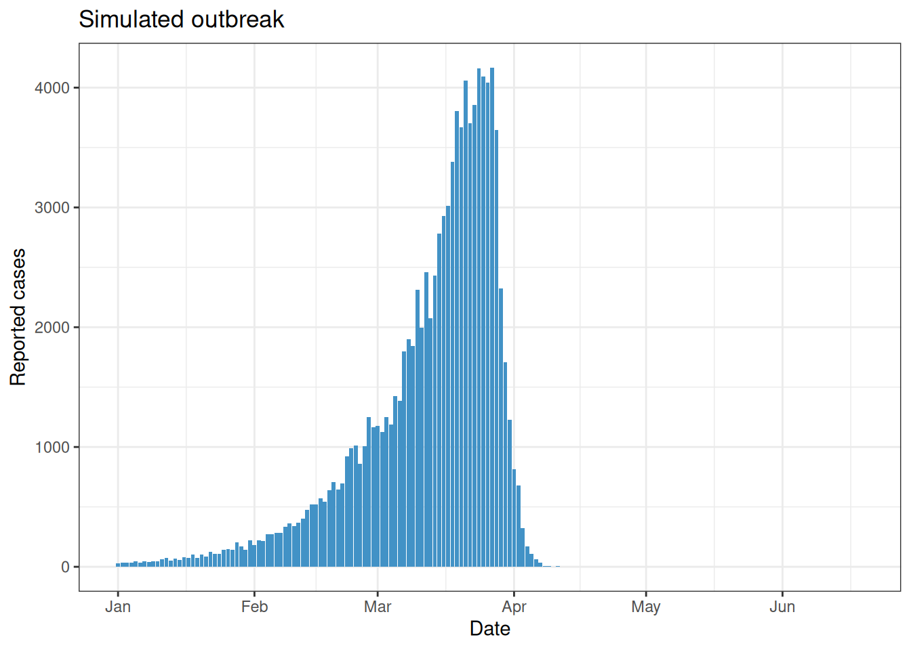
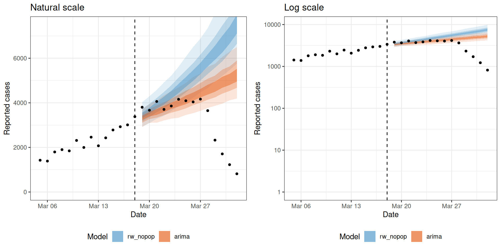
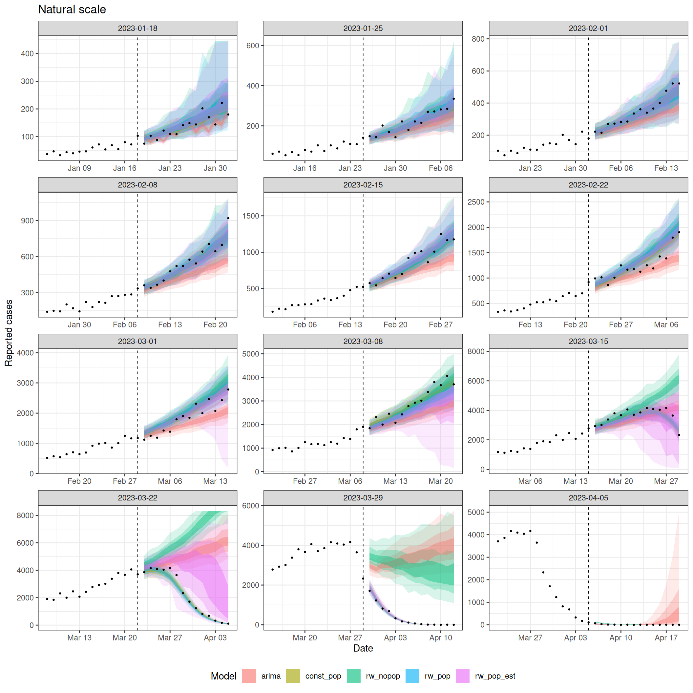
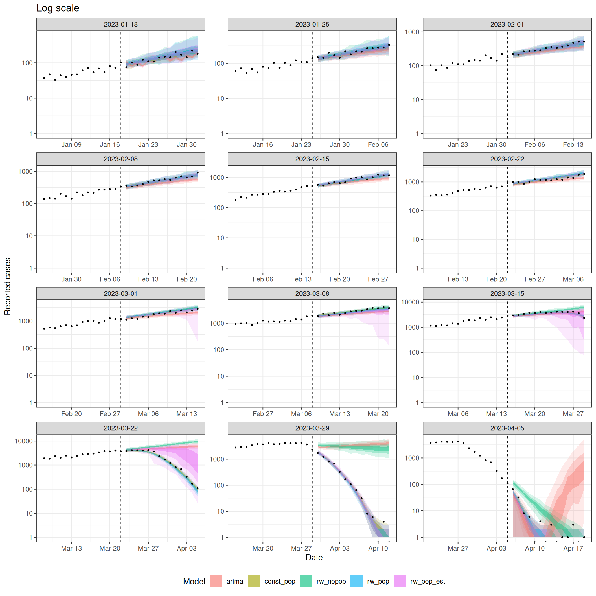
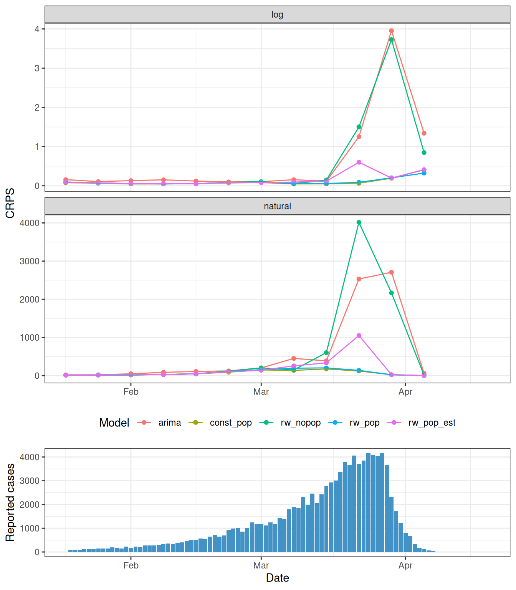
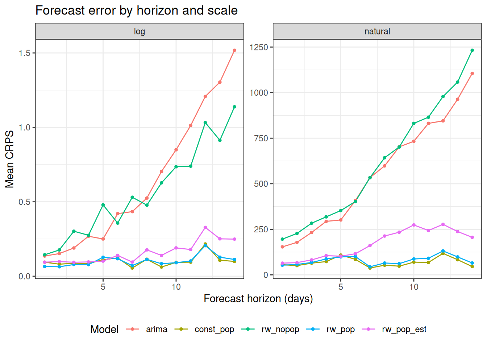
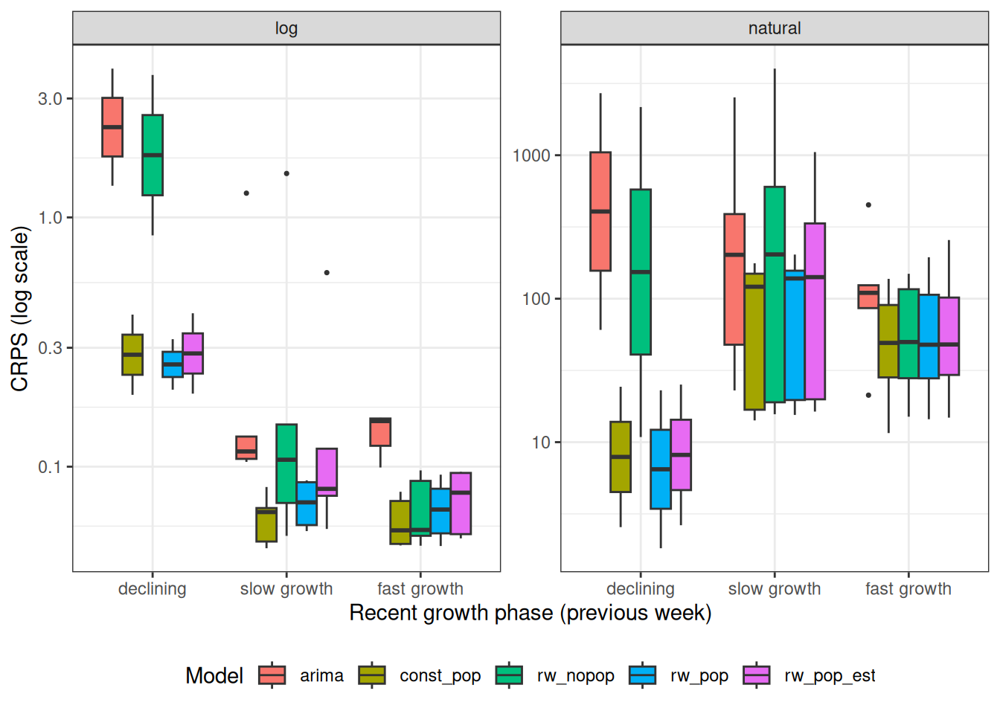
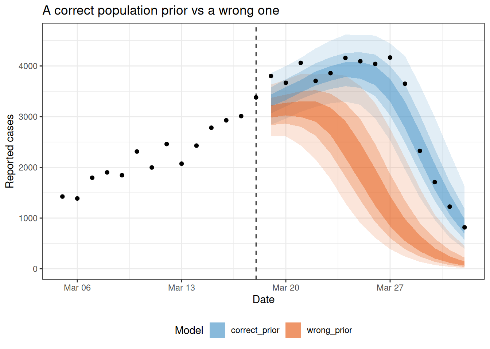

library("nfidd.forecasting")
library("EpiNow2")
library("fable")
library("dplyr")
library("tidyr")
library("tibble")
library("purrr")
library("ggplot2")
library("gridExtra")
library("scoringutils")
theme_set(theme_bw())Epidemiologically-motivated forecasting
Introduction
In earlier sessions we built forecasts from purely statistical models such as ARIMA. These models find patterns in reported counts and project those patterns forward. They do not know anything about how infections arise, how they are transmitted, or why an epidemic must eventually decline.
In this session we add epidemiological mechanism to the forecast. The key idea is the renewal equation, a model of incidence that is mathematically an autoregression whose coefficients are the generation-time distribution and whose scale is the reproduction number \(R_t\) (Bhatt et al. 2020; Cori et al. 2013). This gives the forecast access to information that a pure time-series model cannot use. Renewal models are sometimes referred to as “semi-mechanistic” because they start to inject some epidemiological knowledge into the model, without developing a fully mechanistic compartmental or agent-based model (see Note below). We also account for the delay between infection and case report, and for susceptible depletion, which bends the epidemic curve over at the peak.
NoteFitting the model with
EpiNow2
We fit these models with the EpiNow2 R package (Abbott et al. 2026). EpiNow2 combines the renewal equation, the delays from infection to report, and optional susceptible depletion, and fits them with Stan. The same model structure fit with other software would give the same forecasts, so the focus here is on the structure rather than the package.
NoteWhat about SIR-style models?
The classic “mechanistic” model is one that uses a variation on the Susceptible-Infectious-Recovered compartmental model.(Kermack and McKendrick 1927) Some researchers have adapted the key ideas from this framework to build successful predictive models.(Shaman and Karspeck 2012; Osthus et al. 2019) However, setting up the conceptual motivation and inferential toolkit for these models is beyond the scope of this class. If you are interested in experimenting with these models, we encourage you to try out the epydemix suite of Python packages and desktop apps.(Gozzi et al. 2025)
Slides
Objectives
The aim of this session is to introduce epidemiologically-motivated forecasting using renewal equations, to connect the renewal model to the autoregressive models from earlier sessions, and to backtest models with different levels of epidemiological mechanism against each other.
NoteSetup
Source file
The source file of this session is located at sessions/epi-motivated-forecasting.qmd.
Libraries used
In this session we will use the EpiNow2 package for renewal-equation forecasting, the fable package for the ARIMA baseline, the dplyr, tidyr, tibble, and purrr packages for data wrangling, the ggplot2 and gridExtra packages for plotting, and the scoringutils package for forecast evaluation.
Tip
The best way to interact with the material is via the Visual Editor of RStudio.
Initialisation
We set a random seed for reproducibility. Setting this ensures that you should get exactly the same results on your computer as we do. This is not strictly necessary but will help us talk about the models.
set.seed(7321)Our ARIMA baseline uses the my_fourth_root transformation from earlier sessions (provided by the course package), so it is the same model you are already familiar with.
We set the inference configuration used for the EpiNow2 fits in this session. We use Markov-chain Monte Carlo (MCMC) sampling, which gives the most honest posterior; you could increase the warmup and sampling iterations for your own runs.
stan_config <- stan_opts(
method = "sampling", backend = "rstan",
chains = 4, warmup = 500, samples = 2000
)From autoregression to the renewal equation
An ARIMA model predicts the next value of a time series as a weighted sum of its past values. A renewal equation has the same autoregressive shape, but every piece is given epidemiological meaning.
ARIMA
\[ y_t = \sum_s \phi_s\, y_{t-s} + \varepsilon_t \]
- Coefficients \(\phi_s\) are free, estimated from the data
- \(\varepsilon_t\) is an additive noise term
- No explicit epidemiological meaning
Renewal
\[ I_t = \sum_s R_t\, w_s\, I_{t-s} + \iota_t \]
- Coefficient on each past value is \(R_t\, w_s\), the reproduction number times the generation-time weight
- \(\iota_t\) sits where the ARIMA has \(\varepsilon_t\), and is imported infections, set to zero here
- Every term is an epidemiological quantity
Here \(I_t\) is the number of new infections, \(R_t\) is the reproduction number, and \(w_s\) is the generation-time distribution, the probability that an infection caused \(s\) days ago transmits now (Wallinga and Teunis 2004).
TipTake 5 minutes
Line the two equations up term by term. Which part of the renewal equation plays the role of the ARIMA coefficients \(\phi_s\), and what constrains it? Which part plays the role of the noise term \(\varepsilon_t\)? Where does the randomness in the reported counts come from if the renewal equation itself is deterministic?
NoteSolution
- Both models are a weighted sum of past values plus an additive term.
- The ARIMA coefficient \(\phi_s\) maps onto \(R_t\, w_s\), so the epidemiology sets the coefficients instead of the data.
- The weights \(w_s\) are not free. They must form a valid probability distribution, and they are usually estimated from data on serial intervals or generation times rather than from the incidence curve.
- \(R_t\) scales all the weights together, so it sets the overall growth rate while \(w_s\) sets the timing.
- The imports term \(\iota_t\) sits where the ARIMA has \(\varepsilon_t\), and counts infections arriving from outside the population. We set it to zero here.
- The renewal equation above is deterministic, so the randomness comes from the observation model (negative binomial) that we add on top when we fit it.
Simulating an outbreak
We simulate a single outbreak to forecast, using simulate_infections() from EpiNow2. We set a constant reproduction number above 1 and a fixed population size, which produces an epidemic that grows, peaks, and then declines as susceptibles are depleted. Setting pop_period = "all" applies the depletion across the whole simulated period, so the turnover is built into the data-generating process. The generation time and delays are the example distributions supplied with EpiNow2, fixed to point values with fix_parameters(). The observations are negative binomial with a fixed, moderate overdispersion, which is the observation model our forecasts will also use.
The simulation and the backtest that follows are run ahead of time in data-raw/epi_forecasts.R and saved with the nfidd.forecasting package, so the session renders quickly. We define the fixed distributions we need for the live fits, show the simulation code for reference, and load the saved series.
gen_time <- fix_parameters(example_generation_time)
delays <- fix_parameters(example_incubation_period + example_reporting_delay)
pop_size <- 100000
Warning
The block below is shown for reference and is not run when the session renders (eval = FALSE). Do not copy and run it blindly; it needs the setup above and reproduces the saved data.
dates <- seq.Date(as.Date("2023-01-01"), by = "day", length.out = 170)
R <- data.frame(date = dates, R = 1.25)
sim <- simulate_infections(
R = R,
initial_infections = 20,
generation_time = gt_opts(gen_time),
delays = delay_opts(delays),
obs = obs_opts(family = "negbin", dispersion = Fixed(0.1)),
pop = Fixed(pop_size),
pop_period = "all"
)
reported <- sim |>
as_tibble() |>
filter(variable == "reported_cases") |>
transmute(date, confirm = value)data(epi_reported)
reported <- epi_reportedThe simulated series of reported cases rises to a peak in late March before declining.
ggplot(reported, aes(x = date, y = confirm)) +
geom_col(fill = "#4292C6") +
labs(x = "Date", y = "Reported cases", title = "Simulated outbreak") +
theme_bw()
The decline happens because susceptibles are running out. The population at risk is finite, so once enough people have been infected the effective reproduction number drops below 1 even though the basic reproduction number \(R_0\) we set is still 1.25.
A single forecast
To forecast we truncate the series at a forecast date and fit only to the data available up to that point. We choose a date shortly before the peak, where the epidemic is still growing and the turnover has not yet been observed.
forecast_date <- as.Date("2023-03-18")
train <- reported |> filter(date <= forecast_date)Every renewal fit in this session uses fit_epinow2() from the nfidd.forecasting package. It holds the generation time and delays fixed at the values used to simulate the data, and uses a negative binomial observation model to match the simulation. The same helper runs the backtest in data-raw/epi_forecasts.R, and you can reuse it for your own real-time estimates.
Internally, fit_epinow2() calls estimate_infections(), which combines the renewal infection model, the delay convolution, and the observation model in a single Bayesian fit.

EpiNow2 model architecture. Diagram from the EpiNow2 model overview.
TipPrototyping with faster inference
The fits here use MCMC, defined in stan_config above and passed to fit_epinow2(). While developing your own analysis you can swap in a faster approximate method by changing stan_config, for example variational Bayes:
stan_config <- stan_opts(method = "vb", backend = "rstan", samples = 1000)Variational Bayes returns in seconds but gives an approximate posterior, so use MCMC for final results.
We also define a helper that fits the ARIMA baseline with fable and returns sample-level predictions.
forecast_arima_samples <- function(train, horizon = 14, times = 1000) {
fit <- train |>
as_tsibble(index = date) |>
model(ar2 = ARIMA(my_fourth_root(confirm)))
# a failed fit returns a null model whose samples are all NA, which would
# drop the ARIMA forecast from the plots without any visible error
if (is_null_model(fit$ar2[[1]])) {
stop("ARIMA fit failed; check that the urca package is installed.")
}
generate(fit, h = horizon, times = times) |>
as_tibble() |>
transmute(
forecast_date = max(train$date),
date,
horizon = as.integer(date - max(train$date)),
sample = as.integer(as.factor(.rep)),
predicted = pmax(.sim, 0),
model = "arima"
)
}We fit the rw_nopop renewal model (a weekly random walk on \(R_t\) with no susceptible depletion) and the ARIMA baseline. Both use a 14-day forecast horizon.
en2_default <- fit_epinow2(rt_opts(rw = 7), train, stan = stan_config)
arima_default <- forecast_arima_samples(train)We plot both forecasts against the data that were later observed, on the natural and the log scale. The nested shaded ribbons are the 30%, 60% and 90% credible intervals, and the points are the observations. We do not draw a median line, so the plot shows the spread of each forecast rather than a single best guess. A renewal model with no susceptible depletion can grow explosively past the peak, so on the natural scale we cap the axis to keep the plot readable; the log scale shows the full range.
single_fc <- bind_rows(
get_predictions(en2_default, format = "sample") |>
as_tibble() |>
filter(horizon > 0) |>
transmute(date, sample = as.integer(sample), predicted,
model = "rw_nopop"),
arima_default |> transmute(date, sample, predicted, model)
) |>
filter(!is.na(predicted))
# 30%, 60% and 90% prediction intervals
band_summary <- function(df, group_vars) {
df |>
group_by(across(all_of(group_vars))) |>
summarise(
lower_30 = quantile(predicted, 0.35, na.rm = TRUE),
upper_30 = quantile(predicted, 0.65, na.rm = TRUE),
lower_60 = quantile(predicted, 0.20, na.rm = TRUE),
upper_60 = quantile(predicted, 0.80, na.rm = TRUE),
lower_90 = quantile(predicted, 0.05, na.rm = TRUE),
upper_90 = quantile(predicted, 0.95, na.rm = TRUE),
.groups = "drop"
)
}
# draw the three nested intervals as ribbons, no median line
add_bands <- function(g) {
g +
geom_ribbon(aes(ymin = lower_90, ymax = upper_90, fill = model),
alpha = 0.15) +
geom_ribbon(aes(ymin = lower_60, ymax = upper_60, fill = model),
alpha = 0.25) +
geom_ribbon(aes(ymin = lower_30, ymax = upper_30, fill = model),
alpha = 0.40)
}
# floor the band bounds at 1 so the log scale has no log(0) artefacts
floor_bands <- function(df, m = 1) {
df |> mutate(across(
c(lower_30, upper_30, lower_60, upper_60, lower_90, upper_90),
\(x) pmax(x, m)
))
}
# draw rw_nopop first so the narrower arima bands sit on top and stay
# visible where the two forecasts overlap
single_sum <- band_summary(single_fc, c("model", "date")) |>
mutate(model = factor(model, levels = c("rw_nopop", "arima")))
obs_window <- reported |>
filter(date > forecast_date - 14, date <= forecast_date + 14)
plot_single <- function(log_scale = FALSE) {
dat <- if (log_scale) floor_bands(single_sum) else single_sum
g <- add_bands(ggplot(dat, aes(x = date))) +
geom_point(data = obs_window, aes(x = date, y = confirm),
inherit.aes = FALSE, size = 1.2) +
geom_vline(xintercept = forecast_date, linetype = "dashed") +
scale_fill_manual(
values = c("rw_nopop" = "#4292C6", "arima" = "#E6550D")) +
labs(x = "Date", y = "Reported cases", fill = "Model") +
theme_bw() +
theme(legend.position = "bottom")
if (log_scale) {
g + scale_y_log10(limits = c(1, NA)) + labs(title = "Log scale")
} else {
g + coord_cartesian(ylim = c(0, max(obs_window$confirm) * 1.8)) +
labs(title = "Natural scale")
}
}
gridExtra::grid.arrange(plot_single(FALSE), plot_single(TRUE), ncol = 2)
Neither model knows that the epidemic is about to turn over. The ARIMA projects the recent trend forward, and the rw_nopop renewal does the same because it has no mechanism for susceptible depletion. Both over-shoot the peak.
TipTake 5 minutes
Look at the two forecasts against the held-out observations, on both scales. Which model looks closer over the first few days, and which drifts further off as the horizon grows? What single piece of information would either model need to predict the turning point?
NoteSolution
Over the first few days both forecasts sit close to the observations, and there is little to choose between them. As the horizon grows both drift above the truth and over-shoot the peak, because neither has any mechanism to stop growth. The rw_nopop renewal grows fastest, since it projects the recent reproduction number forward with nothing to bend it down. To predict the turning point either model would need to know that the susceptible pool is running out, which means knowing the population at risk and how much of it has already been infected.
The models we will compare
We compare five models that differ in how much epidemiological mechanism and flexibility they include. We have already met two of them, the ARIMA baseline and the rw_nopop renewal model.
- arima.
ARIMA(my_fourth_root(confirm))with auto-ARIMA, so fable selects the order automatically from the data. It may select different orders at different forecast dates. - rw_nopop. A renewal model with a weekly random walk on \(R_t\) and no susceptible depletion, the model we used for the single forecast.
- const_pop. A single constant reproduction number, still estimated from the data (
rw = 0), with the population fixed at its true value. This matches the data-generating process of constant \(R_t\) plus susceptible depletion. - rw_pop. Adds a weekly random walk on \(R_t\) (
rw = 7) with the true population. The random walk is insurance in case our assumptions about the data-generating process turn out not to be fully correct, letting \(R_t\) drift if the data ask for it. - rw_pop_est. Weekly random walk on \(R_t\) with an estimated population (
Normal(mean = pop_size, sd = pop_size / 2)). In the real world we would not know the exact effective population size, so this is the model we would be able to fit.
The four renewal models share the same structure and differ only in the rt_opts() arguments. The ARIMA baseline is fit separately with fable, using the same fourth-root transformation as in earlier sessions.
NoteWhat is a random walk on \(R_t\)?
We met the random walk in earlier sessions as a baseline that carries the last value forward with added noise. Here we place the random walk on \(R_t\) rather than on the cases, so \(R_t\) drifts from week to week instead of being held constant. This is a common choice for \(R_t\) estimation, because it assumes \(R_t\) this week is close to last week’s with some added uncertainty, letting it drift over time rather than following a fixed trend.
The misinformed-modeller demonstration is deliberately left out of the backtest. It appears later as a standalone demonstration.
epi_models <- list(
rw_nopop = rt_opts(rw = 7),
const_pop = rt_opts(
pop = Fixed(pop_size), future = "latest", pop_period = "all"
),
rw_pop = rt_opts(
rw = 7, pop = Fixed(pop_size), future = "latest", pop_period = "all"
),
rw_pop_est = rt_opts(
rw = 7, pop = Normal(mean = pop_size, sd = pop_size / 2),
future = "latest", pop_period = "all"
)
)
NoteWhat the
rt_opts() settings mean
rw = 7puts a weekly random walk on \(R_t\); leave it out for a constant \(R_t\) (rw = 0).pop = Fixed(...)orNormal(...)sets the population at risk, which turns on susceptible depletion.future = "latest"carries the last estimated \(R_t\) forward across the forecast horizon.pop_period = "all"applies the depletion across the whole period.
Backtesting across forecast dates
We backtest each model from 12 forecast dates, one week apart, spanning the growth phase, the peak, and the decline. Contrasting phases matters because susceptible depletion only shapes the forecast near and after the peak.
forecast_dates <- seq.Date(
from = as.Date("2023-01-18"), to = as.Date("2023-04-05"), by = "week"
)
length(forecast_dates)[1] 12At each forecast date we fit all four EpiNow2 models and the ARIMA baseline with the helpers defined above, and combine the sample-level predictions into a single tibble. This backtest fits 60 models, so we run it ahead of time in data-raw/epi_forecasts.R and load the saved result; the code is shown for reference.
Warning
The block below is shown for reference and is not run when the session renders (eval = FALSE). It fits 60 models and takes several minutes, so do not copy and run it blindly.
backtest_one <- function(fdate) {
train <- reported |> filter(date <= fdate)
en2 <- map_dfr(names(epi_models), function(m) {
fit <- fit_epinow2(epi_models[[m]], train, stan = stan_config)
get_predictions(fit, format = "sample") |>
as_tibble() |>
filter(horizon > 0) |>
transmute(
forecast_date = fdate, date, horizon,
sample = as.integer(sample), predicted, model = m
)
})
arm <- forecast_arima_samples(train)
bind_rows(en2, arm)
}
all_forecasts <- map_dfr(forecast_dates, backtest_one) |>
filter(!is.na(predicted))data(epi_forecasts)
all_forecasts <- epi_forecastsVisualising the backtested forecasts
Before scoring, we look at the forecast trajectories themselves. Each panel is a forecast date, with the 30%, 60% and 90% credible intervals as nested ribbons and the observed data as points, again with no median line. The no-depletion models can grow explosively, so we give each panel its own y axis and show the trajectories on both the natural and the log scale.
trajectory_summary <- band_summary(
all_forecasts |> filter(horizon > 0, !is.na(predicted)),
c("model", "forecast_date", "date")
)
obs_windows <- map_dfr(forecast_dates, function(fd) {
reported |>
filter(date >= fd - 14, date <= fd + 14) |>
mutate(forecast_date = fd)
})
# each panel gets its own y axis; on the natural scale we clip the ribbons
# to twice that panel's observed peak so the exploding no-depletion models
# do not dominate the axis
panel_caps <- obs_windows |>
group_by(forecast_date) |>
summarise(cap = max(confirm) * 2, .groups = "drop")
plot_trajectories <- function(log_scale = FALSE) {
dat <- trajectory_summary
if (log_scale) {
dat <- floor_bands(dat)
} else {
dat <- dat |>
left_join(panel_caps, by = "forecast_date") |>
mutate(across(
c(lower_30, upper_30, lower_60, upper_60, lower_90, upper_90),
\(x) pmin(x, cap)
))
}
add_bands(ggplot(dat, aes(x = date))) +
geom_point(data = obs_windows, aes(y = confirm), size = 0.5) +
geom_vline(
data = tibble(forecast_date = forecast_dates),
aes(xintercept = forecast_date), linetype = "dashed", linewidth = 0.3
) +
facet_wrap(~forecast_date, scales = "free", ncol = 3) +
labs(x = "Date", y = "Reported cases", fill = "Model") +
theme_bw() +
theme(legend.position = "bottom") +
(if (log_scale) {
list(scale_y_log10(limits = c(1, NA)), labs(title = "Log scale"))
} else {
labs(title = "Natural scale")
})
}plot_trajectories(FALSE)
plot_trajectories(TRUE)
During growth the models agree and track the data. Around the peak the depletion models (const_pop, rw_pop, rw_pop_est) bend over with the observations, while the rw_nopop renewal and the ARIMA project growth forward and over-shoot. In the decline the downturn is already visible in the data, so all models project a fall and the gap between them narrows again.
TipTake 5 minutes
Before reading on, predict which model you expect to score best overall, and at which forecast dates you expect the models to differ most. Does your prediction change if we score on the natural scale versus the log scale?
NoteSolution
The depletion models should score best, because they can bend the curve at the peak, and the model that matches the data-generating process, const_pop, should be the best of them. The models should differ most around the peak, where a mechanism for the turnover matters most. During early growth the data already contain the stable trend, so the models converge. The rw_nopop renewal and the ARIMA should do worst on the natural scale, where over-shooting the large peak counts is heavily penalised.
Scoring
We merge the forecasts with the observed values, keeping only out-of-sample horizons (horizon > 0). The ARIMA returns 1000 samples while the EpiNow2 fits occasionally drop one, so we take the same number of samples from every forecast before scoring, which keeps score() from warning about uneven sample counts.
obs <- reported |> transmute(date, observed = confirm)
score_data <- all_forecasts |>
filter(horizon > 0) |>
left_join(obs, by = "date")
common_n <- score_data |>
count(model, forecast_date, date, horizon) |>
pull(n) |>
min()
score_data <- score_data |>
group_by(model, forecast_date, date, horizon) |>
slice_sample(n = common_n) |>
mutate(sample = row_number()) |>
ungroup()
fc <- as_forecast_sample(
score_data,
forecast_unit = c("model", "forecast_date", "date", "horizon"),
observed = "observed",
predicted = "predicted",
sample_id = "sample"
)Reported cases span several orders of magnitude over an epidemic, so a score on the natural scale is dominated by the largest counts near the peak. Scoring the same forecasts on the log scale instead rewards getting the epidemic’s growth rate right, so we score on both scales and compare (Bosse et al. 2023). We use transform_forecasts() with log_shift to add log-transformed forecasts alongside the originals, which score() then scores together, labelling each with a scale column.
fc <- transform_forecasts(fc, fun = log_shift, offset = 1)
scores <- score(fc)Overall scores by model
overall <- summarise_scores(scores, by = c("model", "scale")) |>
as_tibble() |>
mutate(across(where(is.numeric), \(x) signif(x, 3))) |>
arrange(scale, crps)
overall |>
select(
model, scale, crps, bias, dispersion, underprediction, overprediction
) |>
knitr::kable()| model | scale | crps | bias | dispersion | underprediction | overprediction |
|---|---|---|---|---|---|---|
| const_pop | log | 0.102 | -0.107000 | 0.0401 | 0.0410 | 0.0206 |
| rw_pop | log | 0.103 | -0.077100 | 0.0442 | 0.0337 | 0.0248 |
| rw_pop_est | log | 0.160 | 0.000208 | 0.0676 | 0.0363 | 0.0557 |
| rw_nopop | log | 0.566 | 0.297000 | 0.0440 | 0.0109 | 0.5110 |
| arima | log | 0.641 | -0.244000 | 0.0530 | 0.0806 | 0.5070 |
| const_pop | natural | 68.500 | -0.107000 | 25.9000 | 26.0000 | 16.6000 |
| rw_pop | natural | 79.100 | -0.077100 | 32.3000 | 30.1000 | 16.7000 |
| rw_pop_est | natural | 170.000 | 0.000208 | 82.2000 | 22.2000 | 65.8000 |
| arima | natural | 563.000 | -0.244000 | 50.1000 | 88.0000 | 425.0000 |
| rw_nopop | natural | 616.000 | 0.297000 | 64.4000 | 9.0700 | 543.0000 |
TipTake 5 minutes
Read the score table before reading on. On each scale, which model has the best (lowest) CRPS, and which the worst? What do the bias, overprediction, and underprediction columns say about how each model fails? How does the ranking change between the natural and the log scale, and why?
NoteSolution
const_pop, the model that matches the data-generating process, has the best CRPS on both scales, withrw_popjust behind.- The
rw_nopoprenewal and the ARIMA are far worse, and their error is dominated by overprediction because they sail past the peak. - On the natural scale the
rw_nopopis worst; on the log scale the ARIMA is worst. The order of the two swaps between the scales, and this makes sense. Therw_nopoprenewal models exponential growth, which is a process on the log scale, while the ARIMA uses a fourth-root transform that does not match the data-generating process. On the log scale every time point is weighted about equally, so the ARIMA’s mismatched transform is exposed. On the natural scale the exponential growth of therw_nopopsupports very large forecasts at the peak, and those are penalised heavily. rw_pop_estsits in between, because estimating the population from a single outbreak adds uncertainty, so it pays a little over the fixed-population models.- On the log scale the gaps shrink, because log scoring down-weights the large peak counts that dominate the natural scale, but the depletion models still lead.
- The fixed-population models use the true population, which you would not know in the real world, so
rw_pop_estis closer to what you would actually run.
Scores by forecast date
Breaking the CRPS down by forecast date shows how the ranking shifts across the epidemic’s phases.
by_date <- summarise_scores(
scores, by = c("model", "forecast_date", "scale")
) |>
as_tibble()
x_range <- c(min(forecast_dates), max(forecast_dates) + 14)
scores_plot <- by_date |>
ggplot(aes(x = forecast_date, y = crps, colour = model)) +
geom_point() +
geom_line() +
facet_wrap(~scale, scales = "free_y", ncol = 1) +
scale_x_date(limits = x_range) +
labs(x = NULL, y = "CRPS", colour = "Model") +
theme_bw() +
theme(legend.position = "bottom")
obs_plot <- reported |>
filter(date >= x_range[1], date <= x_range[2]) |>
ggplot(aes(x = date, y = confirm)) +
geom_col(fill = "#4292C6") +
scale_x_date(limits = x_range) +
labs(x = "Date", y = "Reported cases") +
theme_bw()
# stack the natural and log CRPS panels over the data so the dates line up
gridExtra::grid.arrange(scores_plot, obs_plot, ncol = 1, heights = c(3, 1))Warning: Removed 2 rows containing missing values or values outside the scale range (`geom_col()`).
The models are close early in growth, because the data already contain the stable trend. Around the peak the gap is largest: const_pop and rw_pop stay accurate while the rw_nopop renewal and the ARIMA blow up by over-shooting, and rw_pop_est struggles a little because its population is weakly identified. Into the decline the downturn is visible in the data and the models come back together. On the log scale the same pattern appears but is less pronounced, because log scoring down-weights the large peak counts that dominate the natural scale.
Scores by horizon
by_horizon <- summarise_scores(
scores, by = c("model", "horizon", "scale")
) |>
as_tibble()
ggplot(by_horizon, aes(x = horizon, y = crps, colour = model)) +
geom_line() +
geom_point(size = 1) +
facet_wrap(~scale, scales = "free_y") +
labs(
x = "Forecast horizon (days)", y = "Mean CRPS", colour = "Model",
title = "Forecast error by horizon and scale"
) +
theme_bw() +
theme(legend.position = "bottom")
On the natural scale the gap between models opens at longer horizons, where the forecasts run into the peak. On the log scale the differences are smaller and steadier, because log scoring down-weights the large counts that dominate the natural scale. Interestingly, the rw_pop_est model that estimates the population size compares reasonably well to the other good models for the first few horizons, but then at longer horizons you really notice the difference, especially on the natural scale.
Scores by recent growth rate
The forecast date is only a proxy for where we are in the epidemic. A more direct summary is the recent growth rate, how fast cases were changing in the week before each forecast. We group the forecast dates into growth phases and compare the CRPS distributions, on a log scale so the large scores near the turnover do not swamp the rest.
growth_rates <- tibble(forecast_date = forecast_dates) |>
mutate(growth_rate = map_dbl(forecast_date, function(fd) {
now <- reported$confirm[reported$date == fd]
prev <- reported$confirm[reported$date == fd - 7]
log((now + 1) / (prev + 1)) / 7
}))
by_growth <- by_date |>
left_join(growth_rates, by = "forecast_date") |>
# split at 0 (declining vs growing) and 0.06 (slow vs fast)
mutate(phase = cut(
growth_rate,
breaks = c(-Inf, 0, 0.06, Inf),
labels = c("declining", "slow growth", "fast growth")
))
ggplot(by_growth, aes(x = phase, y = crps, fill = model)) +
geom_boxplot(
position = position_dodge(preserve = "single"), outlier.size = 0.6
) +
facet_wrap(~scale, scales = "free_y") +
scale_y_log10() +
labs(
x = "Recent growth phase (previous week)",
y = "CRPS (log scale)", fill = "Model"
) +
theme_bw() +
theme(legend.position = "bottom")
TipTake 5 minutes
This view lines the forecasts up by recent growth rate instead of the calendar. What does it show that the scores by forecast date and by horizon do not? Look in particular at the fast-growing forecasts on the right of the plot: how do the models compare there, and why?
NoteSolution
- When growth is fast, on the right of the plot and early in the epidemic, all the renewal models score about the same and clearly beat the ARIMA. Susceptible depletion has not started to matter yet, so the no-depletion
rw_nopopis as good as the models that include it. - The models only pull apart as the growth rate falls towards zero, around the turnover. There the
rw_nopoprenewal and the ARIMA blow up, because they keep projecting the growth, while the fixed-population depletion models bend over.
Coverage
NoteWhat is coverage?
Coverage asks how often the observations fall inside the forecast intervals. A well-calibrated 50% interval should contain the observation about half the time, and a 90% interval about nine times in ten. We met the idea of a nominal coverage rate in passing in the forecasting concepts session, and here we measure it.
We convert the sample forecasts to quantiles with as_forecast_quantile(), and then score() and summarise_scores() return interval coverage directly.
coverage <- score_data |>
as_forecast_sample(
forecast_unit = c("model", "forecast_date", "date", "horizon"),
observed = "observed", predicted = "predicted", sample_id = "sample"
) |>
as_forecast_quantile(probs = c(0.05, 0.25, 0.5, 0.75, 0.95)) |>
score() |>
summarise_scores(by = "model") |>
as_tibble() |>
transmute(
model,
interval_coverage_50 = round(interval_coverage_50, 2),
interval_coverage_90 = round(interval_coverage_90, 2)
) |>
arrange(model)
coverage |> knitr::kable()| model | interval_coverage_50 | interval_coverage_90 |
|---|---|---|
| arima | 0.21 | 0.54 |
| const_pop | 0.51 | 0.85 |
| rw_nopop | 0.49 | 0.72 |
| rw_pop | 0.57 | 0.90 |
| rw_pop_est | 0.55 | 0.92 |
TipTake 5 minutes
Compare each model’s 50% and 90% coverage against the nominal 0.5 and 0.9. Which models are over-confident, with intervals too narrow to reach nominal coverage, and which are about right?
NoteSolution
- The depletion models (
const_pop,rw_popandrw_pop_est) are close to their nominal coverage, andrw_pop_estover-covers at the 90% level, meaning its intervals are wider than they need to be. - The ARIMA is badly over-confident on both intervals, and the
rw_nopoprenewal is over-confident at the 90% level, with intervals too narrow to contain the observations around the peak they miss. - These are different failures. Over-confidence means the intervals are too narrow to be trusted, while over-coverage means they are too wide to be useful.
- Coverage is a joint check on the centre and the spread of a forecast. A model can reach nominal coverage by being wide as well as by being accurate, as
rw_pop_estshows, so read it alongside the CRPS rather than on its own.
When the modeller is misinformed
The backtest showed that knowing the population matters. The model is only ever as good as the information we give it, so here we misinform it. We fit two models at a forecast date shortly before the peak, both with constant \(R_t\) and susceptible depletion, and both given a prior on the population at risk. The first prior is centred on the true population and is tight, standing in for a modeller who knows the population well. The second is centred about 30% below the truth and is wider, standing in for a plausible but mistaken guess. Neither prior is obviously silly, which is the point.
demo_date <- as.Date("2023-03-18")
demo_train <- reported |> filter(date <= demo_date)
demo_correct <- fit_epinow2(
rt_opts(pop = Normal(mean = pop_size, sd = pop_size / 20),
future = "latest", pop_period = "all"),
demo_train, stan = stan_config
)
demo_wrong <- fit_epinow2(
rt_opts(pop = Normal(mean = 0.7 * pop_size, sd = 0.1 * pop_size),
future = "latest", pop_period = "all"),
demo_train, stan = stan_config
)
mechanism_samples <- bind_rows(
get_predictions(demo_correct, format = "sample") |>
as_tibble() |> filter(horizon > 0) |> mutate(model = "correct_prior"),
get_predictions(demo_wrong, format = "sample") |>
as_tibble() |> filter(horizon > 0) |> mutate(model = "wrong_prior")
) |>
filter(!is.na(predicted))
mechanism_compare <- band_summary(mechanism_samples, c("model", "date"))add_bands(ggplot(mechanism_compare, aes(x = date))) +
geom_point(
data = reported |> filter(date > demo_date - 14, date <= demo_date + 14),
aes(x = date, y = confirm), inherit.aes = FALSE
) +
geom_vline(xintercept = demo_date, linetype = "dashed") +
scale_fill_manual(
values = c("correct_prior" = "#4292C6", "wrong_prior" = "#E6550D")) +
scale_colour_manual(
values = c("correct_prior" = "#4292C6", "wrong_prior" = "#E6550D")) +
labs(x = "Date", y = "Reported cases", fill = "Model", colour = "Model",
title = "A correct population prior vs a wrong one") +
theme_bw() +
theme(legend.position = "bottom")Ignoring unknown labels:
• colour : "Model"Warning: No shared levels found between `names(values)` of the manual scale and the data's colour
values.
TipTake 5 minutes
Compare the two forecasts against the observations after the forecast date. What does the wrong population prior do to the timing of the turnover, and in which direction is the error? Is the wrong forecast simply noisier, or is it wrong in a systematic way? Could the data available at the forecast date have told the model that its population was wrong?
NoteSolution
- The model with the correct prior bends over with the observations.
- The wrong prior tells the model that the susceptible pool is smaller than it is, so depletion takes hold earlier and the forecast turns over sooner and lower than the truth.
- The error is in a consistent direction rather than being extra noise. A wrong assumption about the mechanism pushes the whole forecast one way, and a wider prior on the population widens the intervals without removing that pull.
- A modest error in the assumed population produces a much larger error in the forecast, because depletion compounds over the horizon. That is what makes this kind of mistake dangerous: the assumption looks plausible and the forecast does not.
- The data cannot rescue the model. Before the turnover the case curve is still consistent with many combinations of reproduction number and population at risk, because a larger population with a lower \(R_0\) produces a similar growth curve. The depletion signal only sharpens once the curve bends, so the population at risk is weakly identified from the case curve alone until after the peak. This is why the prior matters so much, and why it is worth spending time on what the effective population actually is.
Going further
Challenge
- Change the simulation and see how the rankings move. Try a different reproduction number, a different population size, or a reproduction number that varies over time (
Ras a time series insimulate_infections()). Note that a time-varyingRin the simulation is the effective reproduction number for a wholly susceptible population, before susceptible depletion is applied on top. - Try a different variance-stabilising transform for the ARIMA baseline. The session uses a fourth root, but exponential growth is linear on the log scale, so a log transform matches the growth process more closely. Compare the fourth root, the square root, and the log by swapping
my_fourth_root(confirm)forsqrt(confirm)orlog(confirm + 1)in the ARIMA call. Does the log transform improve the scores, especially on the log scale where the fourth-root mismatch is exposed (see the scores by scale above)? - Give the ARIMA baseline some mechanism. Build a susceptible-fraction covariate, for example
1 - cumsum(confirm) / pop_size, and add it as a regressor withARIMA(my_fourth_root(confirm) ~ susceptible_fraction). Because the covariate depends on the cases, you would forecast one step ahead at a time, updating the cumulative cases with each prediction. Does a statistical model with a depletion covariate close the gap to the renewal models? - Push this further and make the ARIMA renewal-like, by giving it a covariate that plays the role of the renewal equation’s weighted sum of past infections.
- The renewal equation is \(I_t = R_t \sum_s w_s\, I_{t-s}\), so taking logs gives \(\log I_t = \log R_t + \log\left(\sum_s w_s\, I_{t-s}\right)\).
- We do not observe infections, so substitute reported cases and build the covariate \(f_t = \sum_s w_s\, y_{t-s}\), with \(w_s\) from the generation-time distribution used above. Call this column
foi, for force of infection. This gives the approximate relation \(\log y_t \approx \log R_t + \log f_t\). - So on a log-transformed response the covariate enters as \(\log f_t\) with a coefficient of one, and the intercept plays the role of \(\log R_t\). Fitting
ARIMA(log(confirm + 1) ~ log(foi + 1) + pdq(d = 0))and letting the coefficient be estimated relaxes that constraint, while the ARIMA error terms let \(\log R_t\) drift over time. Leaving the series undifferenced (pdq(d = 0)) keeps the intercept that stands in for \(\log R_t\). - Reported cases are a delayed and noisy version of infections, so this approximates the renewal equation rather than reproducing it, and it still has no susceptible depletion unless you add the covariate above as well. As with the susceptible fraction, the covariate depends on past cases, so forecast one step ahead at a time.
- How close does this get you to the renewal models?
- Add a Gaussian process (
gp = gp_opts(), fromEpiNow2) instead of a random walk on \(R_t\). Does smoothing \(R_t\) change the peak forecast? - Swap the inference to variational Bayes or pathfinder by changing the single
stan_configline. How much faster is the backtest, and does the coverage change? - Extend the forecast horizon to 28 days. Which model degrades fastest?
Methods in practice
Wrap up
- Review what you’ve learned in this session with the learning objectives
- Share your questions and thoughts
References
Abbott, Sam, Joel Hellewell, Katharine Sherratt, et al. 2026. EpiNow2: Estimate and Forecast Real-Time Infection Dynamics. https://epiforecasts.io/EpiNow2/.
Bhatt, Samir, Neil Ferguson, Seth Flaxman, Axel Gandy, Swapnil Mishra, and James A. Scott. 2020. Semi-Mechanistic Bayesian Modeling of COVID-19 with Renewal Processes. arXiv:2012.00394. arXiv. https://doi.org/10.48550/arXiv.2012.00394.
Bosse, Nikos I., Sam Abbott, Anne Cori, Edwin van Leeuwen, Johannes Bracher, and Sebastian Funk. 2023. “Scoring Epidemiological Forecasts on Transformed Scales.” PLOS Computational Biology 19 (8): e1011393. https://doi.org/10.1371/journal.pcbi.1011393.
Cori, Anne, Neil M. Ferguson, Christophe Fraser, and Simon Cauchemez. 2013. “A New Framework and Software to Estimate Time-Varying Reproduction Numbers During Epidemics.” American Journal of Epidemiology 178 (9): 1505–12. https://doi.org/10.1093/aje/kwt133.
Gostic, Katelyn M., Lauren McGough, Edward B. Baskerville, et al. 2020. “Practical Considerations for Measuring the Effective Reproductive Number, Rt.” PLOS Computational Biology 16 (12): e1008409. https://doi.org/10.1371/journal.pcbi.1008409.
Gozzi, Nicolò, Matteo Chinazzi, Jessica T. Davis, et al. 2025. “Epydemix: An Open-Source Python Package for Epidemic Modeling with Integrated Approximate Bayesian Calibration.” PLOS Computational Biology 21 (11): e1013735. https://doi.org/10.1371/journal.pcbi.1013735.
Kermack, William Ogilvy, and A. G. McKendrick. 1927. “A Contribution to the Mathematical Theory of Epidemics.” Proceedings of the Royal Society of London. Series A, Containing Papers of a Mathematical and Physical Character 115 (772): 700–721. https://doi.org/10.1098/rspa.1927.0118.
Osthus, Dave, James Gattiker, Reid Priedhorsky, and Sara Y. Del Valle. 2019. “Dynamic Bayesian Influenza Forecasting in the United States with Hierarchical Discrepancy (with Discussion).” Bayesian Analysis 14 (1): 261–312. https://doi.org/10.1214/18-BA1117.
Shaman, Jeffrey, and Alicia Karspeck. 2012. “Forecasting Seasonal Outbreaks of Influenza.” Proceedings of the National Academy of Sciences 109 (50): 20425–30. https://doi.org/10.1073/pnas.1208772109.
Wallinga, Jacco, and Peter Teunis. 2004. “Different Epidemic Curves for Severe Acute Respiratory Syndrome Reveal Similar Impacts of Control Measures.” American Journal of Epidemiology 160 (6): 509–16. https://doi.org/10.1093/aje/kwh255.